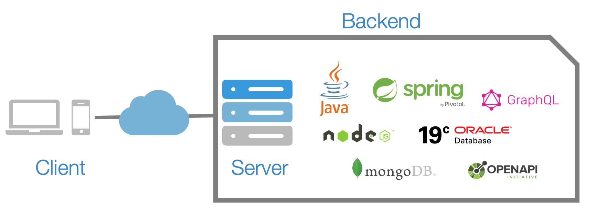

백엔드란?

백엔드는 웹 애플리케이션의 사용자가 보지 못하는 영역인 서버나 데이터베이스를 관리하는 기술이다.
프론트엔드는 사용자가 웹 서비스를 편하게 이용할 수 있도록 사용자 인터페이스를 다룬다면, 백엔드는 실질적으로 사용자들이 원하는 정보를 제공할 수 있도록 데이터를 관리하거나 서버를 운영하는 일을 한다.
다시 말해, 백엔드는 프론트엔드에 있는 사용자들이 하고자 하는 행동을 처리하는 것이다. 따라서 백엔드 개발자는 시스템 컴포넌트 작업, API작성, 라이브러리 생성, 데이터베이스 통합 등 다양한 개발 활동을 하게 된다.
이 분야에서 사용되는 언어는
크게 자바,파이썬,루비,php 등이 있다.
java
자바는 가장 인기 있는 프로그래밍 언어 중 하나로, 대표적인 객체 지향 프로그래밍(Object Oriented Programming, OOP) 언어이다.
자바는 웹 애플리케이션 개발에 가장 많이 사용되지만, 웹 개발 이외에도 서버, 모바일, 임베디드 등 다양한 분야에서 사용되고 있습니다.
자바는 특수한 가상 머신(Java Virtual Machine, JVM)이 필요하다. 이 말인즉슨 JVM을 설치할 수만 있다면 어느 환경에서든지 자바로 개발된 프로그램을 실행할 수 있다는 뜻이 된다.
이러한 이유로 자바는 다양한 분야에서 이용하고 있다.
자바는 사용할 수 있는 라이브러리의 양 또한 많은데, 이미 잘 짜여 있는 검증된 오픈 소스 라이브러리를 사용하면 애플리케이션을 다시 컴파일, 즉 컴퓨터가 이해할 수 있는 이진수 언어로 변환할 필요가 없다.
따라서 자바로 짜여진 프로그램은 유지 보수가 용이하다는 장점이 있다.
PHP
PHP는 하이퍼텍스트 전처리기(Hypertext Preprocessor)의 약자로, 웹 개발 중에서 서버 측에서 주로 사용하는 프로그래밍 언어이다. PHP는 쉽게 설치할 수 있고, 배우는 데 허들도 낮은 편이라 많은 사랑을 받고 있는 언어이다. 이러한 PHP의 장점은 단점으로 이어지기도 한다.
PHP는 높은 자유도를 가지고 있기 때문에 코드가 난잡해진다는 단점이 있다.예전에는 PHP를 사용해 만든 웹 서비스가 많았지만, 이제는 점점 줄어드는 추세이다.
프로그래밍 언어 순위를 보아도 PHP를 선호하는 정도는 급격히 감소하고 있는 것을 확인하실 수 있다.
Ruby
루비는 일본 개발자 유키히로 마츠모토(Yukihiro Mastumoto)가 개발한 스크립트 언어로, 이 역시 객체 지향 프로그래밍 언어 중 하나이다.
인간에게 친화적인 언어를 개발하고자 했던 개발자의 의도대로 루비는 명령어를 작성하기에 편한 언어로 알려져 있다.
인간 중심적 언어로서 루비는 파이썬과 자주 비교되고는 하는데, 전세계적으로 보면 파이썬의 인기가 월등히 높고, 사람들의 선호도 역시 파이썬이 훨씬 더 높은 편이다.
Python
파이썬은 개발자들이 시스템을 효율적으로 통합하고, 빠르게 작업할 수 있게 해주는 최고의 프로그래밍 언어이다.비교적 자연어와 유사하기 때문에 개발을 처음 접하시는 분들도 파이썬을 이용한다면 쉽게 프로그래밍을 할 수 있다.
또한, 파이썬은 인공지능 분야에도 사용되는 언어이다. 인공지능 영역이 빠르게 발전하면서 파이썬의 점유율은 함께 빠르게 성장하고 있다.
실제로 글로벌 기업들을 포함해 많은 기업들이 파이썬으로 웹 개발을 하고 있기 때문에 웹 개발자로 성장하고 싶다면 파이썬을 익히는 것을 꼭 추천한다.